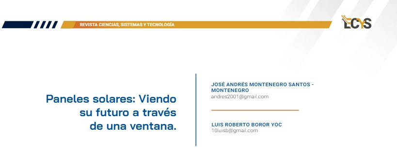

10 Paneles solares: Viendo su futuro a través de una ventana. {#3.1 }

PALABRAS CLAVE: Perovskita, Fotovoltaico, Agrovoltaico, Infrarrojo, Ultravioleta
10.1 Introducción
En la búsqueda de una fuente de energía renovable capaz de reemplazar a los actuales combustibles fósiles se ha determinado que una de las principales soluciones se encuentra en la energía solar. Sin embargo, emplear la energía solar como fuente de energía principal no es una tarea fácil debido a la cantidad de dificultades que se presentan al intentar capturar una cantidad considerable de energía del espectro solar.
Para enfrentar el problema señalado se han desarrollado tecnologías como los paneles de perovskita, baterías de litio para almacenar energía y cristales para enfocar energía solar en pequeños puntos de células fotovoltaicas. Además se han ideado implementaciones muy interesantes para que los paneles solares sean parte de la vida cotidiana, como pintura fotovoltaica y paneles solares transparentes que pueden funcionar como ventanas.
10.2 Artículo
Los paneles solares transparentes, o también llamados vidrios fotovoltaicos, poseen la capacidad de recolectar la energía solar sin afectar la luz que los atraviesa, estos paneles aventajan a los convencionales en términos de sostenibilidad y reducción en la huella de carbono ya que esta tecnología no necesita transportar la energía generada a través de largas distancias.
Los vidrios fotovoltaicos funcionan de forma similar a un filtro, ya que solamente absorben las longitudes de onda infrarroja y ultravioleta, dejando pasar el espectro electromagnético que normalmente ayuda a iluminar. Debido a esta tecnología, los vidrios fotovoltaicos también son conocidos como Concentradores Solares Luminiscentes Transparentes (TLSC), los cuales están compuestos de sales orgánicas desarrolladas para combinarse con el vidrio, acompañadas de dióxido de titanio o dióxido de níquel, lo que permite captar únicamente las ondas de luz no visibles.
Para hacer esto posible se añade a un vidrio una capa de material especial que permite absorber la luz para transmitirla en longitudes de onda mayores, mientras que la luz infrarroja y ultravioleta se emite en frecuencias menores que rebotan con el cristal, llegando a los bordes del mismo donde hay celdas fotovoltaicas que las convierten finalmente en energía.
Figura 10.1: Estructura
Un enfoque diferente que le han dado algunos investigadores consiste en colocar el concentrador solar luminiscente como capa intermedia de polivinilo butílico en el cristal, esta capa es espectralmente selectiva entre dos vidrios, de esta manera la luz infrarroja se dirige siempre a las células fotovoltaicas que el marco del vidrio tiene.
Figura 10.2: Funcionamiento
Los beneficios que se pueden obtener de esta tecnología alcanzan tanto las áreas urbanas, debido a la capacidad de estos paneles de incorporarse en las construcciones, como el área de la energía agrovoltaica, la cual se refiere a los escenarios donde es posible utilizar una misma superficie de terreno para poder obtener energía solar y, al mismo tiempo, obtener productos agrícolas. Sin embargo, esto no se ha logrado en su totalidad ya que la sombra provocada por los paneles solares convencionales afecta de forma negativa a la producción agrícola.
La porción de tierra cultivable que se vería afectada en caso de que se emplearan paneles solares convencionales sería de aproximadamente el uno por ciento, porcentaje que, por mínimo que sea, traería daños a la población que vive de la agricultura en estos sectores. Los paneles solares transparentes pueden actuar como la solución en este caso ya que, al ser capaces de no obstruir el paso de luz a través de ellos, podrían ser empleados para la recolección de energía solar sin ser un obstáculo significativo para los cultivos que se encuentren debajo de ellos.
10.3 Conclusiones
Para que la energía solar sea la fuente principal de energía a nivel mundial es necesario mejorar las formas en las que dicha energía es extraída, con este objetivo se ha optado por la investigación de materiales más eficientes y por el aumento de los dispositivos encargados de extraer esta energía.
Este aumento de dispositivos viene acompañado de una gran necesidad de espacio para ubicarlos, esta necesidad se puede ver reducida de forma considerable al incluir dispositivos como los paneles solares transparentes en la vida cotidiana de las personas. Estos últimos, a pesar de que actualmente poseen una baja eficiencia, son una tecnología con un gran potencial para solucionar problemas en la extracción de energía solar y funcionan en armonía con otro tipo de campos fundamentales del ser humano como la agricultura.
10.4 Referencias
[1] Jiménez, David. n.d. “¿Qué son las tarifas de luz de coche eléctrico? ¿Realmente salen a cuenta? Todo lo que tienes que saber.” Diariomotor. Accessed febrero 4, 2024. https://www.diariomotor.com/que-es/paneles-solares-transparentes/.
[2] Morillo, Yilda. n.d. “Paneles solares transparentes | Qué son, funcionamiento y ventajas.” Futuro Electrico. Accessed February 6, 2024. https://futuroelectrico.com/paneles-solares-transparentes/. “Paneles solares transparentes.” 2023. Noticias de la Ciencia.
[3] https://noticiasdelaciencia.com/art/46211/paneles-solares-transparentes. “Paneles solares transparentes: ¿Son útiles?” 2023. Endesa. https://www.endesa.com/es/la-cara-e/energias-renovables/paneles-solares-transparentes-utilidad.
[4] “Revelando las tecnologías innovadoras que impulsan el futuro de los paneles solares.” n.d
[5] Energy5. Accessed February 6, 2024. https://energy5.com/es/revelando-lastecnolog%C3%ADas-innovadoras-que-impulsa n-el-futuro-de-los-paneles-solares.